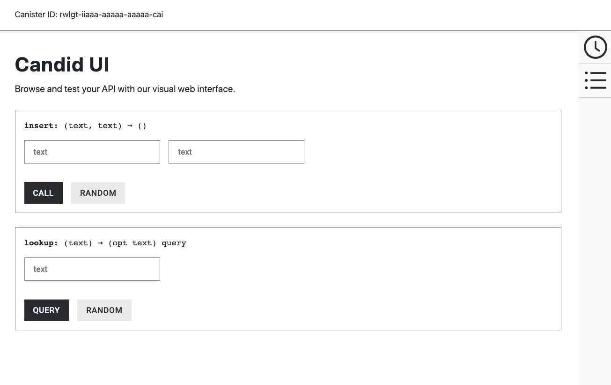

6.库模块导入
本章节中，将会编写一个可以存储并查询电话号码的简单程序。这个教程讲解了如何导入和使用一些基本的Motoko库函数。
这篇教程中，Motoko基本库函数定义在List和AssocList模块中，允许你将list作为链接的键值对使用。这片例子中，键是name， 值是绑定name的phone文本字符串
这个程序支持下面的函数调用
-
insert函数接受name和phone键值对作为输入参数并存储在book变量中
-
lookup函数是一个query函数，使用name作为输入来查询相关的电话号码
修改默认程序
为了编写电话号码查询程序，创建一个新的main.mo文件
源码修改步骤
-
编辑器中打开src/phonebook/main.mo 源码文件
-
复制粘贴下面的示例代码到main.mo文件
// Import standard library functions for lists import L "mo:base/List"; import A "mo:base/AssocList"; // The PhoneBook actor. actor { // Type aliases make the rest of the code easier to read. public type Name = Text; public type Phone = Text; // The actor maps names to phone numbers. flexible var book: A.AssocList<Name, Phone> = L.nil<(Name, Phone)>(); // An auxiliary function checks whether two names are equal. func nameEq(l: Name, r: Name): Bool { return l == r; }; // A shared invokable function that inserts a new entry // into the phone book or replaces the previous one. public func insert(name: Name, phone: Phone): async () { let (newBook, _) = A.replace<Name, Phone>(book, name, nameEq, ?phone); book := newBook; }; // A shared read-only query function that returns the (optional) // phone number corresponding to the person with the given name. public query func lookup(name: Name): async ?Phone { return A.find<Name, Phone>(book, name, nameEq); }; };代码中有几个重点
-
Name和Phone定义为自定义Text类型，像这样创建自定义类型可以增强代码可读性
-
insert函数是一个update调用，lookup函数是一个query调用
-
Phone类型通过?Phone定义为可选值
-
启动本地网络
开始构建项目前，需要连接到本地或远程 ICP 网络。
启动本地网络需要 dfx.json 文件，需要确认在项目根目录操作。在这篇教程中，建议开启 2 个终端，一个启动网络，另一个管理项目。
启动网络步骤
-
打开新的终端
-
进入项目根目录
-
使用下面的命令启动 ICP 本地网络
dfx start --clean这里使用—clean来用一个干净的状态启动ICP网络
这个选项会移除可能存在冲突的孤儿进程或Canister识别码。例如，如果你切换项目后忘记使用dfx stop命令，可能会在其他命令行有后台进程。--clean选项确保你正常启动ICP网络而无需关注其他进程。
-
切换到项目终端
注册构建并部署应用
在开发环境中连接到本地ICP网络后，就可以在本地注册构建部署应用了。
部署应用步骤
-
检查是否在项目根目录
-
注册构建并部署应用命令
dfx deploy phonebookdfx.json文件提供创建应用前端入口的默认配置和asset canister。
在前面的章节中，我们删除了asset canister项因为我们不需要应用前端。删除用不到的文件可以让项目目录保持简介。虽然不需要做这些，但是在dfx.json文件中保留asset canister也没什么坏处。例如，你之后可能想添加前端资源。
这个教程中，可以使用dfx deploy phonebook命令来只部署后台canister，因为项目是一个基于命令行的程序不需要前端资源。
虽然这个教程描述了如何跳过前端canister编译，但是你可以之后为应用添加一个简单的用户界面，相关内容可以查看phone-book 项目，位于examples 代码库中。
使用insert函数添加名字和数字
现在，项目已经部署到本地ICP网络，并且可以使用dfx canister call命令进行测试。
测试部署的程序步骤如下
-
运行下面命令来调用程序的phonebook canister的insert 方法并传递名称和电话号码参数。
dfx canister call phonebook insert '("Chris Lynn", "01 415 792 1333")' -
运行下面的命令添加第二个名称和号码对。
dfx canister call phonebook insert '("Maya Garcia", "01 408 395 7276")' -
运行下面的命令调用lookup函数并传入“CHris Lynn”参数验证。
dfx canister call phonebook lookup '("Chris Lynn")'命令输出
(opt "01 415 792 1333")
-
运行下面的命令调用lookup函数并传入“Maya Garcia”参数验证。
dfx canister call phonebook lookup '("01 408 395 7276")'注意这个命令返回null因为电话号码不是“Maya Garcia”的name键
-
尝试运行下面的命令再次调用lookup函数并传入“Maya Garcia”和“Chris Lynn”参数验证。
dfx canister call phonebook lookup '("Maya Garcia","Chris Lynn")'由于程序只接受一个值，命令会返回第一个值对应的信息，在这里会返回“Maya Garcia”对应的电话号码。
Test functions in a browser
The canister interface description language—often referred to as Candid or more generally as the IDL—provides a common language for specifying the signature of a canister smart contract.
Candid provides a unified way for you to interact with canister smart contracts that are written in different languages or accessed using different tools.
For example, Candid provides a consistent view of a service whether the underlying program is native Rust, JavaScript, or Motoko.
Candid also enables different tools—such as the dfx command-line interface and the Network Nervous System dapp—to share a common description for a service.
Based on the type signature of the actor, Candid also provides a web interface that allows you to call canister functions for testing and debugging.
After you have deployed your project in the local canister execution environment using the dfx deploy or dfx canister install command, you can access the Candid web interface endpoint in a browser.
This web interface—the Candid UI—exposes the service description in a form, enabling you to quickly view and test functions and experiment with entering different data types without writing any front-end code.
To use the Candid web interface to test canister functions:
-
Find the Candid UI canister identifier associated with the current project using the
dfx canister id __Candid_UIcommand.dfx canister id __Candid_UIThe command displays the canister identifier for the Candid UI with output similar to the following:
r7inp-6aaaa-aaaaa-aaabq-cai
-
Copy the Candid UI canister identifier so that it is available in the clipboard.
-
If you’ve stopped the local canister execution environment, restart it locally by running the following command:
dfx start --background -
Open a browser and navigate to the address and port number specified in the
dfx.jsonconfiguration file.By default, the local canister execution environment binds to the
127.0.0.1:8000address and port number. -
Add the required
canisterIdparameter and the Candid UI canister identifier returned by thedfx canister id __Candid_UIcommand to the URL.For example, the full URL should look similar to the following but with the
CANDID-UI-CANISTER-IDENTIFIERthat was returned by thedfx canister id __Candid_UIcommand:http://127.0.0.1:8000/?canisterId=<CANDID-UI-CANISTER-IDENTIFIER>
For instance, with the example canister identifier for the Candid UI as shown above, this could look as follows:
http://127.0.0.1:8000/?canisterId=r7inp-6aaaa-aaaaa-aaabq-cai
The browser then displays a form for you to specify a canister identifier or choose a Candid description (
.did) file. Note that this field refers to the canister identifier of the canister you would like to interact with (as opposed to the canister identifier for the Candid UI that we used in the last step). -
Specify the canister identifier of the canister you would like to test in the Provide a canister ID field, then click Go to display the service description.
If you aren’t sure which canister identifier to use, you can run the
dfx canister idcommand to look up the identifier for a specific canister name. For instance, to get the canister identifier for a canister namedmy_counter, you would use:dfx canister id my_counter
-
Review the list of function calls and types defined in the dapp.
-
Type a value of the appropriate type for a function or click Random to generate a value, then click Call or Query to see the result.
Note that depending on the data type, the Candid interface might display additional configuration settings for testing functions. For example, if a function takes an array, you might need to specify the number of items in the array before entering values.
